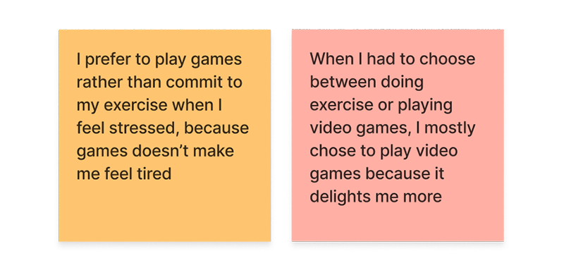
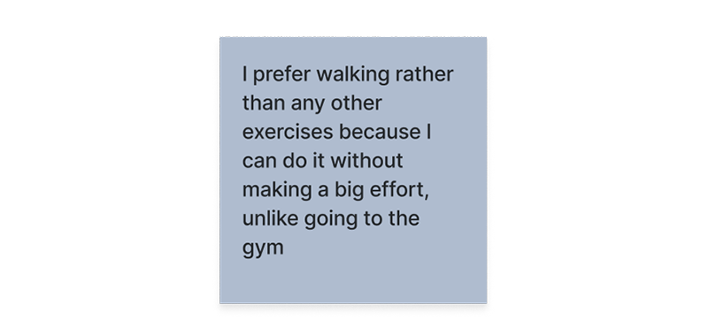

Walkabit
Habit Tracking App
Walkabit encourages users to stay physically active by gamifying walking. It helps users to build a walking habit by providing satisfaction and rewards after each walking mission.
Introduction ✍🏻
Brief:
Propose a new mobile app designed to support building (or breaking) a habit. Based on user research, identifying an opportunity for an app to improve people's day-to-day lives.
Team Size:
Individual
Duration:
5 days
Deliverables:
- Mid-fidelity prototype
- Presentation
- Design report
User Interviews 💬
For this project, I chose the topic of exercise habits. I started the discovery phase by doing user interviews to get an insight into the problems that users faced when doing exercise activities.
I created an interview guide and set up in-person and phone call interviews with 7 people (5 males and 2 females), students and workers, aged 23-33 years old.
Interview Guide
- Can you tell me about your exercise activities?
- How frequently do you exercise?
- What are the reasons you do exercise?
- Do you have any challenges to maintain your exercise routine?
- Can you tell me about the last few times you decided not to do exercise?
- What did you do instead?
- Do you keep track of your exercise routine?
Research Findings 🔍
By doing an affinity map to synthesize the data from the user interviews, I found a recurring problem that was mentioned by 5 out of 7 interviewees: when they feel unmotivated, they decided not to do exercise.
Problem Statement 📌
Based on the research findings, I identified the problem statement:
People who want to stay active sometimes get unmotivated so they need to be encouraged.
User Persona 👤
Tom
28 years old
Software Engineer living in Barcelona
Goal:
- Stay active everyday
Frustrations:
- Some days he feels unmotivated to do exercises and just wants to play games
- Feels guilty when he stays at home all day
Solution 🎯
I thought of ways to encourage users to still do exercise when they feel unmotivated, and I gained insights by looking back at some of the user quotes from the interviews:
1. Make the exercise fun, like a game
Two interviewees mentioned that they preferred playing games instead of doing exercise.
2. To reduce friction, choose an exercise with the least effort → walking
One interviewee mentioned that his preferred exercise is walking because it doesn't require a big effort.
3. Provide a sense of satisfaction and reward to build a habit
Taken from a best-selling book 'Atomic Habit' by James Clear. It talks about simple rules that will help develop good habits and stop bad habits.
Prototype 🚀
It's Saturday and Tom feels a little lazy to do his exercise, but he feels guilty if he stays home all day. He finds the Walkabit app and downloads it, hoping it would motivate him to stay active today.
Ideation 💡
I started by doing Crazy 8's to generate a lot of design ideas.
I then combined a few ideas into my lo-fi prototype. Inspired by video games, I went with the concept of playing a character doing walking missions. There's a story behind every mission and a reward after completing each one, to engage users.
Design Iterations 🔄
1
From the usability testing, some users were unsure what to do after selecting a mission, "Is the route shown a suggested one? Can I walk a different route?" To make it clear to the users, I added an instruction.
2
Users wanted to know the progress of their walk during the route and the destination they're going to, so I added this information. Some users also raised safety concerns about going to an unknown place so I used landmarks as walking destinations.

3
Users wanted to know how many calories they burn in a mission, so I added this information to the mission completion summary.
Conclusions 💫
Walkabit helps to build a habit of staying active and doing exercise even when the users are unmotivated, by:
- Gamifying walking (turning a low-effort exercise into something fun to do)
- Providing satisfaction (completing missions) and rewards (collectible items)
- Tracking the progress of their routine
When doing usability testing, I received many feedback on the game feature that didn't actually affect the user flow. They were suggestions on how they think the game would be more interesting for them. While these are good to improve the retention, in this early phase of app development, it's important to prioritize the features that are crucial for the MVP.
There are many different kinds of games, and users have different game preferences. If given the opportunity, I would like to explore a different gaming experience to incorporate into the app.
Next Steps 🏃🏻♂️
If I were to continue working on the design, my next steps would be to add:
- Custom destination
From usability tests, users want the option to input their own destination such as work, school, home, etc. - Round-trip missions
Users want a round-trip route if they start from home, since they have to go back home anyway. - Notification when the user's been inactive all day
Implement notifications to encourage users to do missions when they haven't or barely moved all day. - Social feature → sharing, add friends, leaderboard
Users want to share their achievements and compare their progress among their friends. This also serves as accountability partner.
Thank you for reading my case study, any feedback is greatly appreciated. Let's get in touch! 💬